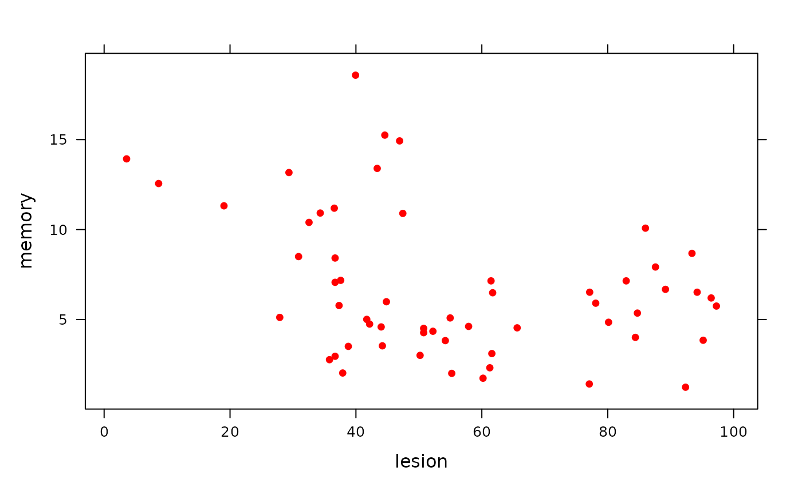
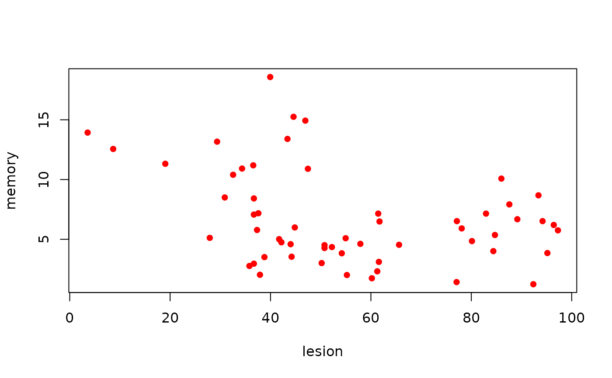

Memory and the Hippocampus
HippocampusLesions.RdSpatial memory score (memory) and percent lesion of the hippocampus
(lesion).
Format
A data frame with 57 observations on the following 2 variables.
- lesion
a numeric vector
- memory
a numeric vector
Source
Broadbent, N.J., L.R. Squire, and R.E. Clark. 2004. Spatial memory, recognition memory, and the hippocampus. Proceedings of the National Academy of Sciences (USA) 101: 14515-14520.
Examples
HippocampusLesions
#> lesion memory
#> 1 92.36 1.24
#> 2 95.16 3.85
#> 3 97.26 5.75
#> 4 96.43 6.20
#> 5 94.20 6.52
#> 6 93.38 8.68
#> 7 89.17 6.68
#> 8 87.58 7.92
#> 9 85.99 10.08
#> 10 82.93 7.15
#> 11 84.71 5.36
#> 12 84.39 4.01
#> 13 80.13 4.85
#> 14 77.07 1.42
#> 15 78.09 5.91
#> 16 77.13 6.52
#> 17 65.61 4.54
#> 18 61.72 6.49
#> 19 61.46 7.15
#> 20 61.59 3.11
#> 21 61.27 2.32
#> 22 60.19 1.74
#> 23 55.22 2.01
#> 24 54.20 3.83
#> 25 54.97 5.09
#> 26 57.90 4.62
#> 27 52.23 4.35
#> 28 50.76 4.51
#> 29 50.76 4.27
#> 30 50.19 3.01
#> 31 37.90 2.03
#> 32 35.80 2.77
#> 33 36.69 2.96
#> 34 38.79 3.51
#> 35 44.20 3.54
#> 36 44.01 4.59
#> 37 42.17 4.75
#> 38 41.72 5.01
#> 39 44.84 5.99
#> 40 47.45 10.90
#> 41 46.94 14.93
#> 42 44.59 15.25
#> 43 39.94 18.58
#> 44 36.56 11.19
#> 45 36.69 8.42
#> 46 36.69 7.07
#> 47 37.58 7.18
#> 48 37.32 5.78
#> 49 27.90 5.12
#> 50 30.89 8.50
#> 51 19.04 11.32
#> 52 29.36 13.17
#> 53 32.55 10.40
#> 54 34.33 10.92
#> 55 43.38 13.40
#> 56 8.66 12.56
#> 57 3.57 13.93
xyplot(memory ~ lesion, data = HippocampusLesions,
pch = 16, col = "red")

plot(memory ~ lesion, data = HippocampusLesions,
pch = 16, col = "red")
